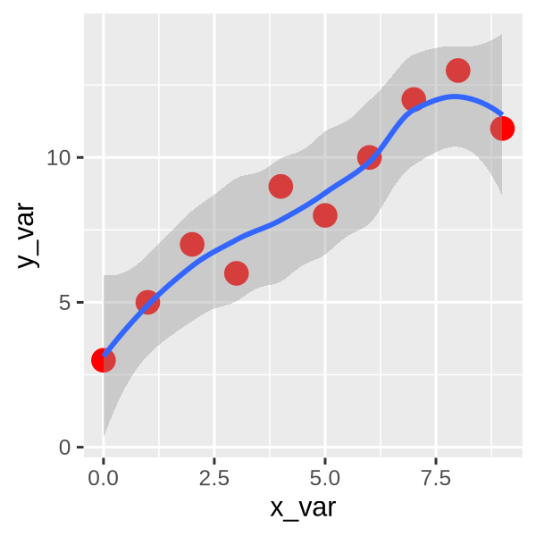

Magic Commands#
In Jupyter Notebooks#
#
Author: Monika Doerig
Date: Jan 13 2026
#
License:
Note: If this notebook uses neuroimaging tools from Neurocontainers, those tools retain their original licenses. Please see Neurodesk citation guidelines for details.
Citation and Resources:#
Tools included in this workflow#
R:
R Core Team. (2025). R: A language and environment for statistical computing (Version 4.4.3) [Software]. R Foundation for Statistical Computing. https://www.R-project.org/
Python:
Python Software Foundation. (2023). Python (Version 3.11.6) [Software]. Available at https://www.python.org
Educational resources#
1. Magic Commands#
Magic commands, often referred to as magics, are special commands available in the IPython kernel that streamline various tasks, such as connecting Python with the operating system, other languages, or different kernels. Jupyter notebooks offer a wide range of these commands, which are generally categorized into two groups:
Line magics: commands that affect a single line within a cell
Cell magics: commands that operate on the entire cell
The next sections will highlight frequently used commands from both categories. Additionally, there are alternative commands that provide similar functionality to some magics.
2. Line Magics#
A line magic, as indicated by its name, is a command that operates on a single line and is marked by a leading % symbol. These commands can be grouped into various categories.
2.1 Information Magics#
There are three information magics
%lsmagic%magic%quickref
that provide information about the available magic commands in the notebook.
%lsmagic#
Gives a list of all available magic commands in the Jupyter Notebook, including both line and cell magics.
%lsmagic
Available line magics:
%alias %alias_magic %autoawait %autocall %automagic %autosave %bookmark %cat %cd %clear %code_wrap %colors %conda %config %connect_info %cp %debug %dhist %dirs %doctest_mode %ed %edit %env %gui %hist %history %killbgscripts %ldir %less %lf %lk %ll %load %load_ext %loadpy %logoff %logon %logstart %logstate %logstop %ls %lsmagic %lx %macro %magic %mamba %man %matplotlib %micromamba %mkdir %more %mv %notebook %page %pastebin %pdb %pdef %pdoc %pfile %pinfo %pinfo2 %pip %popd %pprint %precision %prun %psearch %psource %pushd %pwd %pycat %pylab %qtconsole %quickref %recall %rehashx %reload_ext %rep %rerun %reset %reset_selective %rm %rmdir %run %save %sc %set_env %store %subshell %sx %system %tb %time %timeit %unalias %unload_ext %uv %who %who_ls %whos %xdel %xmode
Available cell magics:
%%! %%HTML %%SVG %%bash %%capture %%code_wrap %%debug %%file %%html %%javascript %%js %%latex %%markdown %%perl %%prun %%pypy %%python %%python2 %%python3 %%ruby %%script %%sh %%svg %%sx %%system %%time %%timeit %%writefile
Automagic is ON, % prefix IS NOT needed for line magics.
%magic#
Prints a list of all available magic commands and their descriptions.
%magic
%quickref#
Gives a quick reference of the magic commands available in the Jupyter Notebook.
%quickref
2.2 Directory Operation Magics and Alternatives#
Certain magic commands allow interaction with the operating system, enabling tasks like displaying the contents of a directory or switching the current working directory. The following are some of the most commonly used commands for these purposes:
%pwd#
As its name suggests, this magic command prints the current working directory of the Jupyter Notebook.
%pwd
'/home/jovyan/workspace/books/examples/workflows'
!pwd is an alternative command on Linux that can also print the current working directory, but it is not a magic command.
!pwd
/home/jovyan/workspace/books/examples/workflows
The difference between the two commands on Linux is that %pwd is provided by the IPython kernel, while !pwd is provided by Jupyter, which allows shell commands to be run within cells.
However, on Windows, !pwd is not recognized as an internal or external command, operable program or batch file, so it is not a valid alternative to %pwd.
%ls#
This command is used to list the files and directories in the current working directory. We can also use !ls command in Linux, but again, it is not recognized on Windows.
%ls
AA_Neurodesk_demo_tour.ipynb ipyniivue_ipywidgets.ipynb
MRIQC.ipynb nextflow_neurodesk.ipynb
Magic_commands.ipynb nipype_full.ipynb
PyBIDS.ipynb nipype_short.ipynb
RISE_slideshow.ipynb papermill-slurm-submission-example.ipynb
bids_conversion.ipynb pydra_preproc_ants.ipynb
intro.md
If you want to display one type of files, you can for example use ls *.ipynb to list all Jupyter Notebook files in the current directory.
%ls *.ipynb
AA_Neurodesk_demo_tour.ipynb ipyniivue_ipywidgets.ipynb
MRIQC.ipynb nextflow_neurodesk.ipynb
Magic_commands.ipynb nipype_full.ipynb
PyBIDS.ipynb nipype_short.ipynb
RISE_slideshow.ipynb papermill-slurm-submission-example.ipynb
bids_conversion.ipynb pydra_preproc_ants.ipynb
%mkdir#
This magic command is used to create a new directory in the current working directory. If the directory already exists, it will raise an error.
%mkdir data_dir
%rmdir#
This magic command does the opposite and is used to remove a directory in the current working directory.
%rmdir data_dir
In Jupyter notebooks, the
%mkdirand%rmdirmagic commands have limited functionality:%mkdirwill raise an error if the directory already exists, and%rmdircan only remove empty directories.To safely create a directory without error if it exists, or to remove a directory and all its contents, you can use shell commands with the
!operator.For example,
!mkdir -p data_dirwill create the directory only if it does not already exist, and!rm -rf data_dirwill remove the directory and all its contents.These commands can be used directly in notebook cells as a more robust alternative to the magic commands.
%cd#
This magic command is used to change the current working directory to a specified path.
The shell command !cd works both on Linux and Windows.
On linux, we use
/, whereas on Windows, we use\or\\to separate directories.
%bookmark#
This magic command is used to create a bookmark, an alias, for a directory, which can be used later to quickly navigate to that directory.
We can run %bookmark?to see more options. This magic is especially useful for frequently changing between different directories.
%bookmark?
Let’s make a new directory named test, switch to it, and set a bookmark for easy access and change directory back to the current working directory.
pwd = %pwd
%mkdir test
%cd test
/home/jovyan/workspace/books/examples/workflows/test
%bookmark test
%cd $pwd
/home/jovyan/workspace/books/examples/workflows
%cd test
/home/jovyan/workspace/books/examples/workflows/test
%cd $pwd
/home/jovyan/workspace/books/examples/workflows
2.3. System Operation Magics#
There are some magics for system opeartions, such as package installation or checking package versions and other information.
%pip magic#
It is used to install Python packages in the Jupyter Notebook. It can be used the following way:
%pip intall <packageName>
Package versions and informations can be checked with:
%pip show <packageName>
We can also use them as Shell commands both on Linux and Winows:
!pip install <packageName>
!pip show <packageName>
Besides, it also works without % and !:
pip install <packageName>
pip show <packageName>
2.4. Magics on Python files#
The following run magic can be used to run python (.py) and external Jupyter Notebook (.ipynb) files.
%run
The %load command is used to insert the contents of a .py file into the current Jupyter Notebook cell, allowing you to edit and run the code directly within the notebook. We will demonstrate these commands together with some cell magics.
%load
2.5. Variable Magics#
%who, %whos and %who_ls#
who and whos are used to list the variables in the current namespace; %whos gives more detailed information about the variables, such as their type.
who_ls is an alternative command that returns a sorted list of all interactive variables in the current namespace as a list.
a = 1
b = 'hello'
c = 1.5
%who
a b c pwd
%who str
b pwd
%whos
Variable Type Data/Info
-----------------------------
a int 1
b str hello
c float 1.5
pwd str /home/jovyan/workspace/books/examples/workflows
%who_ls
['a', 'b', 'c', 'pwd']
2.6. Timing Magics#
There are two timing magics that can be used to measure the execution time of a line of code.
%time magic#
The %time magic measures the execution time of a single run of the code. It gives you the information about the wall time of execution.
%time result= [i**2 for i in range(10000)]
CPU times: user 0 ns, sys: 1.07 ms, total: 1.07 ms
Wall time: 1.08 ms
%timeit#
The %timeit magic uses the Python timeit module, which runs a statement of 7 runs, 1000 loops each and then provides the best of each iteration in each round and gives time measurement with the range of standard deviation.
%timeit result= [i**2 for i in range(10000)]
746 μs ± 177 μs per loop (mean ± std. dev. of 7 runs, 1,000 loops each)
History magics#
The %history magic is used to display the command history of the Jupyter Notebook. It can be limited to a specific number of lines or a specific range of lines.
%history -l 5
%who str
%whos
%who_ls
%time result= [i**2 for i in range(10000)]
%timeit result= [i**2 for i in range(10000)]
The %dhist command displays a history of all visited directories:
%dhist
Directory history (kept in _dh)
0: /home/jovyan/workspace/books/examples/workflows
1: /home/jovyan/workspace/books/examples/workflows/test
2: /home/jovyan/workspace/books/examples/workflows
3: /home/jovyan/workspace/books/examples/workflows/test
4: /home/jovyan/workspace/books/examples/workflows
3. Cell Magics#
As its name suggested, a cell magic is a command working for the whole cell, which is prefixed with two %% characters.
3.1. Bash code magics#
They work on linux, but not on Windows.
%%!#
This executes the whole cell in a bash an returns a list:
%%!
ls
['AA_Neurodesk_demo_tour.ipynb',
'MRIQC.ipynb',
'Magic_commands.ipynb',
'PyBIDS.ipynb',
'RISE_slideshow.ipynb',
'bids_conversion.ipynb',
'intro.md',
'ipyniivue_ipywidgets.ipynb',
'nextflow_neurodesk.ipynb',
'nipype_full.ipynb',
'nipype_short.ipynb',
'papermill-slurm-submission-example.ipynb',
'pydra_preproc_ants.ipynb',
'test']
%%bash#
The %%bash is an extension of the ! shell prefix. It lets you run multiline bash code in the Notebook.
%%bash
ls
AA_Neurodesk_demo_tour.ipynb
MRIQC.ipynb
Magic_commands.ipynb
PyBIDS.ipynb
RISE_slideshow.ipynb
bids
_conversion.ipynb
intro.md
ipyniivue_ipywidgets.ipynb
nextflow_neurodesk.ipynb
nipype_full.ipynb
nip
ype_short.ipynb
papermill-slurm-submission-example.ipynb
pydra_preproc_ants.ipynb
test
3.2. Programming Magics#
The basic structure is %%+language. Here are some pointers to resources:
%%HTML or %%html: run HTML in the notebook cells%%writefile and %%file: create python .py files, and append codes to an existing .py file%%js or %%javascript: run JavaScript in the Jupyter notebook
Running R in Jupyter Notebooks:#
There are different ways to set up a Jupyter Notebook for R. Two straigt forward ways are to
Install the Python
rpy2library and use the Python Kernel with%%R magic commands
Install the R kernel (
IRkernel) for Jupyter Notebooks
The differences between these methods are that we can run Python code and R in the same Jupyter notebook for the first method, while we can only run R code in a separate Jupyter notebook for the second method.
1. Use Python Kernel#
Install R runtime and packages via mamba:
# r-essentials: R runtime; rpy2 library: Python↔R bridge
!mamba install -c conda-forge r-essentials rpy2 -y
?25l[+] 0.0s
?25h
?25l[+] 0.0s
[+] 0.1s
conda-forge/linux-64 ━━━━━━━╸━━━━━━━━━━━━━━━ 0.0 B / ??.?MB @ ??.?MB/s 0.0s
conda-forge/noarch ━━━━━━━━━╸━━━━━━━━━━━━━ 0.0 B / ??.?MB @ ??.?MB/s 0.0s
[+] 0.2s
conda-forge/linux-64 ━━━━━━━━━━━━━━━━━━━━━━━ 363.5kB / 51.2MB @ 2.0MB/s 0.1s
conda-forge/noarch ━━━━━━━━━━━━━━━━━━━━━━━ 61.6kB / 24.8MB @ 344.4kB/s 0.1s
[+] 0.3s
conda-forge/linux-64 ╸━━━━━━━━━━━━━━━━━━━━━━ 3.4MB / 51.2MB @ 12.2MB/s 0.2s
conda-forge/noarch ━╸━━━━━━━━━━━━━━━━━━━━━ 2.3MB / 24.8MB @ 8.1MB/s 0.2s
[+] 0.4s
conda-forge/linux-64 ━━╸━━━━━━━━━━━━━━━━━━━━ 8.1MB / 51.2MB @ 20.9MB/s 0.3s
conda-forge/noarch ━━━━━╸━━━━━━━━━━━━━━━━━ 7.0MB / 24.8MB @ 18.0MB/s 0.3s
[+] 0.5s
conda-forge/linux-64 ━━━━╸━━━━━━━━━━━━━━━━━━ 12.8MB / 51.2MB @ 26.0MB/s 0.4s
conda-forge/noarch ━━━━━━━━━╸━━━━━━━━━━━━━ 11.8MB / 24.8MB @ 23.8MB/s 0.4s
[+] 0.6s
conda-forge/linux-64 ━━━━━━╸━━━━━━━━━━━━━━━━ 17.6MB / 51.2MB @ 29.4MB/s 0.5s
conda-forge/noarch ━━━━━━━━━━━╸━━━━━━━━━━━ 14.1MB / 24.8MB @ 25.8MB/s 0.5s
[+] 0.7s
conda-forge/linux-64 ━━━━━━━╸━━━━━━━━━━━━━━━ 19.9MB / 51.2MB @ 30.7MB/s 0.6s
conda-forge/noarch ━━━━━━━━━━━━━━━━╸━━━━━━ 18.9MB / 24.8MB @ 29.0MB/s 0.6s
[+] 0.8s
conda-forge/linux-64 ━━━━━━━━━╸━━━━━━━━━━━━━ 23.5MB / 51.2MB @ 31.2MB/s 0.7s
conda-forge/noarch ━━━━━━━━━━━━━━━━━━━╸━━━ 22.4MB / 24.8MB @ 29.7MB/s 0.7s
[+] 0.9s
conda-forge/linux-64 ━━━━━━━━━━╸━━━━━━━━━━━━ 24.7MB / 51.2MB @ 30.8MB/s 0.8s
conda-forge/noarch ━━━━━━━━━━━━━━━━━━━━╸━━ 23.7MB / 24.8MB @ 29.3MB/s 0.8s
[+] 1.0s
conda-forge/linux-64 ━━━━━━━━━━╸━━━━━━━━━━━━ 24.7MB / 51.2MB @ 30.8MB/s 0.9s
conda-forge/noarch ━━━━━━━━━━━━━━━━━━━━╸━━ 23.7MB / 24.8MB @ 29.3MB/s 0.9s
[+] 1.1s
conda-forge/linux-64 ━━━━━━━━━━╸━━━━━━━━━━━━ 24.7MB / 51.2MB @ 30.8MB/s 1.0s
conda-forge/noarch ━━━━━━━━━━━━━━━━━━━━╸━━ 23.7MB / 24.8MB @ 29.3MB/s 1.0s
[+] 1.2s
conda-forge/linux-64 ━━━━━━━━━━╸━━━━━━━━━━━━ 24.7MB / 51.2MB @ 30.8MB/s 1.1s
conda-forge/noarch ━━━━━━━━━━━━━━━━━━━━╸━━ 23.7MB / 24.8MB @ 29.3MB/s 1.1s
conda-forge/noarch 24.8MB @ 29.3MB/s 1.2s
[+] 1.3s
conda-forge/linux-64 ━━━━━━━━━━━╸━━━━━━━━━━━ 28.2MB / 51.2MB @ 22.0MB/s 1.2s
[+] 1.4s
conda-forge/linux-64 ━━━━━━━━━━━━━╸━━━━━━━━━ 33.0MB / 51.2MB @ 23.8MB/s 1.3s
[+] 1.5s
conda-forge/linux-64 ━━━━━━━━━━━━━━━╸━━━━━━━ 37.8MB / 51.2MB @ 25.4MB/s 1.4s
[+] 1.6s
conda-forge/linux-64 ━━━━━━━━━━━━━━━━━━╸━━━━ 42.8MB / 51.2MB @ 26.8MB/s 1.5s
[+] 1.7s
conda-forge/linux-64 ━━━━━━━━━━━━━━━━━━━━╸━━ 47.4MB / 51.2MB @ 27.9MB/s 1.6s
[+] 1.8s
conda-forge/linux-64 ━━━━━━━━━━━━━━━━━━━━━╸━ 49.8MB / 51.2MB @ 28.5MB/s 1.7s
[+] 1.9s
conda-forge/linux-64 ━━━━━━━━━━━━━━━━━━━━━╸━ 49.8MB / 51.2MB @ 28.5MB/s 1.8s
[+] 2.0s
conda-forge/linux-64 ━━━━━━━━━━━━━━━━━━━━━╸━ 49.8MB / 51.2MB @ 28.5MB/s 1.9s
[+] 2.1s
conda-forge/linux-64 ━━━━━━━━━━━━━━━━━━━━━╸━ 49.8MB / 51.2MB @ 28.5MB/s 2.0s
[+] 2.2s
conda-forge/linux-64 ━━━━━━━━━━━━━━━━━━━━━╸━ 49.8MB / 51.2MB @ 28.5MB/s 2.1s
[+] 2.3s
conda-forge/linux-64 ━━━━━━━━━━━━━━━━━━━━━╸━ 49.8MB / 51.2MB @ 28.5MB/s 2.2s
[+] 2.4s
conda-forge/linux-64 ━━━━━━━━━━━━━━━━━━━━━╸━ 49.8MB / 51.2MB @ 28.5MB/s 2.3s
[+] 2.5s
conda-forge/linux-64 ━━━━━━━━━━━━━━━━━━━━━╸━ 49.8MB / 51.2MB @ 28.5MB/s 2.4s
[+] 2.6s
conda-forge/linux-64 ━━━━━━━━━━━━━━━━━━━━━╸━ 49.8MB / 51.2MB @ 28.5MB/s 2.5s
[+] 2.7s
conda-forge/linux-64 ━━━━━━━━━━━━━━━━━━━━━╸━ 49.8MB / 51.2MB @ 28.5MB/s 2.6s
[+] 2.8s
conda-forge/linux-64 ━━━━━━━━━━━━━━━━━━━━━╸━ 49.8MB / 51.2MB @ 28.5MB/s 2.7s
conda-forge/linux-64 51.2MB @ 28.5MB/s 2.8s
?25h
Pinned packages:
- python=3.13
Pinned packages:
- python=3.13
Transaction
Prefix: /opt/conda
Updating specs:
- r-essentials
- rpy2
Package Version Build Channel Size
────────────────────────────────────────────────────────────────────────────────────────
Install:
────────────────────────────────────────────────────────────────────────────────────────
+ _r-mutex 1.0.1 anacondar_1 conda-forge 4kB
+ binutils_impl_linux-64 2.45 default_hfdba357_105 conda-forge 4MB
+ bwidget 1.10.1 ha770c72_1 conda-forge 130kB
+ cairo 1.18.4 h3394656_0 conda-forge 978kB
+ curl 8.18.0 h4e3cde8_0 conda-forge 190kB
+ font-ttf-dejavu-sans-mono 2.37 hab24e00_0 conda-forge 397kB
+ font-ttf-inconsolata 3.000 h77eed37_0 conda-forge 97kB
+ font-ttf-source-code-pro 2.038 h77eed37_0 conda-forge 701kB
+ font-ttf-ubuntu 0.83 h77eed37_3 conda-forge 2MB
+ fontconfig 2.15.0 h7e30c49_1 conda-forge 266kB
+ fonts-conda-ecosystem 1 0 conda-forge 4kB
+ fonts-conda-forge 1 hc364b38_1 conda-forge 4kB
+ freetype 2.14.1 ha770c72_0 conda-forge 173kB
+ fribidi 1.0.16 hb03c661_0 conda-forge 61kB
+ gcc_impl_linux-64 15.2.0 he420e7e_18 conda-forge 82MB
+ gfortran_impl_linux-64 15.2.0 h281d09f_18 conda-forge 20MB
+ graphite2 1.3.14 hecca717_2 conda-forge 100kB
+ gsl 2.7 he838d99_0 conda-forge 3MB
+ gxx_impl_linux-64 15.2.0 hda75c37_18 conda-forge 16MB
+ harfbuzz 12.2.0 h15599e2_0 conda-forge 2MB
+ kernel-headers_linux-64 6.12.0 he073ed8_5 conda-forge 2MB
+ lerc 4.0.0 h0aef613_1 conda-forge 264kB
+ libblas 3.11.0 5_h4a7cf45_openblas conda-forge 18kB
+ libcblas 3.11.0 5_h0358290_openblas conda-forge 18kB
+ libdeflate 1.25 h17f619e_0 conda-forge 73kB
+ libfreetype 2.14.1 ha770c72_0 conda-forge 8kB
+ libfreetype6 2.14.1 h73754d4_0 conda-forge 387kB
+ libgcc-devel_linux-64 15.2.0 hcc6f6b0_118 conda-forge 3MB
+ libgfortran 15.2.0 h69a702a_18 conda-forge 28kB
+ libgfortran-ng 15.2.0 h69a702a_18 conda-forge 28kB
+ libgfortran5 15.2.0 h68bc16d_18 conda-forge 2MB
+ libglib 2.86.4 h6548e54_0 conda-forge 4MB
+ libjpeg-turbo 3.1.2 hb03c661_0 conda-forge 634kB
+ liblapack 3.11.0 5_h47877c9_openblas conda-forge 18kB
+ libopenblas 0.3.30 pthreads_h94d23a6_4 conda-forge 6MB
+ libpng 1.6.55 h421ea60_0 conda-forge 318kB
+ libsanitizer 15.2.0 h90f66d4_18 conda-forge 8MB
+ libstdcxx-devel_linux-64 15.2.0 hd446a21_118 conda-forge 21MB
+ libtiff 4.7.1 h9d88235_1 conda-forge 435kB
+ libuv 1.51.0 hb03c661_1 conda-forge 895kB
+ libwebp-base 1.6.0 hd42ef1d_0 conda-forge 429kB
+ libxcb 1.17.0 h8a09558_0 conda-forge 396kB
+ make 4.4.1 hb9d3cd8_2 conda-forge 513kB
+ pandoc 3.9 ha770c72_0 conda-forge 22MB
+ pango 1.56.4 hadf4263_0 conda-forge 455kB
+ pcre2 10.47 haa7fec5_0 conda-forge 1MB
+ pixman 0.46.4 h54a6638_1 conda-forge 451kB
+ pthread-stubs 0.4 hb9d3cd8_1002 conda-forge 8kB
+ r-askpass 1.2.1 r45h54b55ab_1 conda-forge 32kB
+ r-assertthat 0.2.1 r45hc72bb7e_6 conda-forge 73kB
+ r-backports 1.5.0 r45h54b55ab_2 conda-forge 131kB
+ r-base 4.5.2 h835929b_3 conda-forge 27MB
+ r-base64enc 0.1_6 r45h54b55ab_0 conda-forge 49kB
+ r-bit 4.6.0 r45h54b55ab_1 conda-forge 621kB
+ r-bit64 4.6.0_1 r45h54b55ab_1 conda-forge 504kB
+ r-blob 1.3.0 r45hc72bb7e_0 conda-forge 70kB
+ r-boot 1.3_32 r45hc72bb7e_1 conda-forge 645kB
+ r-broom 1.0.12 r45hc72bb7e_0 conda-forge 2MB
+ r-bslib 0.10.0 r45hc72bb7e_0 conda-forge 5MB
+ r-cachem 1.1.0 r45h54b55ab_2 conda-forge 77kB
+ r-callr 3.7.6 r45hc72bb7e_2 conda-forge 454kB
+ r-caret 7.0_1 r45h54b55ab_0 conda-forge 4MB
+ r-cellranger 1.1.0 r45hc72bb7e_1008 conda-forge 112kB
+ r-class 7.3_23 r45h54b55ab_1 conda-forge 110kB
+ r-cli 3.6.5 r45h3697838_1 conda-forge 1MB
+ r-clipr 0.8.0 r45hc72bb7e_4 conda-forge 71kB
+ r-clock 0.7.4 r45h3697838_0 conda-forge 2MB
+ r-cluster 2.1.8.2 r45heaba542_0 conda-forge 592kB
+ r-codetools 0.2_20 r45hc72bb7e_2 conda-forge 109kB
+ r-colorspace 2.1_2 r45h54b55ab_0 conda-forge 3MB
+ r-commonmark 2.0.0 r45h54b55ab_1 conda-forge 140kB
+ r-conflicted 1.2.0 r45h785f33e_3 conda-forge 64kB
+ r-cpp11 0.5.3 r45h785f33e_0 conda-forge 243kB
+ r-crayon 1.5.3 r45hc72bb7e_2 conda-forge 168kB
+ r-crul 1.6.0 r45hc72bb7e_1 conda-forge 646kB
+ r-curl 7.0.0 r45h10955f1_1 conda-forge 479kB
+ r-data.table 1.17.8 r45h1c8cec4_1 conda-forge 2MB
+ r-dbi 1.2.3 r45hc72bb7e_2 conda-forge 876kB
+ r-dbplyr 2.5.2 r45hc72bb7e_0 conda-forge 1MB
+ r-diagram 1.6.5 r45ha770c72_4 conda-forge 678kB
+ r-digest 0.6.39 r45h3697838_0 conda-forge 218kB
+ r-dplyr 1.2.0 r45h3697838_0 conda-forge 1MB
+ r-dtplyr 1.3.3 r45hc72bb7e_0 conda-forge 411kB
+ r-e1071 1.7_17 r45h3697838_0 conda-forge 598kB
+ r-ellipsis 0.3.2 r45h54b55ab_4 conda-forge 44kB
+ r-essentials 4.5 r45hd8ed1ab_2006 conda-forge 8kB
+ r-evaluate 1.0.5 r45hc72bb7e_1 conda-forge 112kB
+ r-fansi 1.0.7 r45h54b55ab_0 conda-forge 329kB
+ r-farver 2.1.2 r45h3697838_2 conda-forge 1MB
+ r-fastmap 1.2.0 r45h3697838_2 conda-forge 74kB
+ r-fontawesome 0.5.3 r45hc72bb7e_1 conda-forge 1MB
+ r-forcats 1.0.1 r45hc72bb7e_0 conda-forge 424kB
+ r-foreach 1.5.2 r45hc72bb7e_4 conda-forge 141kB
+ r-foreign 0.8_91 r45h54b55ab_0 conda-forge 270kB
+ r-formatr 1.14 r45hc72bb7e_3 conda-forge 166kB
+ r-fs 1.6.6 r45h3697838_1 conda-forge 511kB
+ r-future 1.69.0 r45h785f33e_0 conda-forge 949kB
+ r-future.apply 1.20.2 r45hc72bb7e_0 conda-forge 208kB
+ r-gargle 1.6.1 r45h785f33e_0 conda-forge 724kB
+ r-generics 0.1.4 r45hc72bb7e_1 conda-forge 88kB
+ r-ggplot2 4.0.2 r45h785f33e_0 conda-forge 8MB
+ r-gistr 0.9.0 r45hc72bb7e_4 conda-forge 775kB
+ r-glmnet 4.1_10 r45ha36cffa_1 conda-forge 2MB
+ r-globals 0.19.0 r45hc72bb7e_0 conda-forge 177kB
+ r-glue 1.8.0 r45h54b55ab_1 conda-forge 165kB
+ r-googledrive 2.1.2 r45hc72bb7e_1 conda-forge 1MB
+ r-googlesheets4 1.1.2 r45h785f33e_1 conda-forge 524kB
+ r-gower 1.0.2 r45h54b55ab_0 conda-forge 227kB
+ r-gtable 0.3.6 r45hc72bb7e_1 conda-forge 229kB
+ r-hardhat 1.4.2 r45hc72bb7e_1 conda-forge 846kB
+ r-haven 2.5.5 r45h6d565e7_1 conda-forge 385kB
+ r-hexbin 1.28.5 r45heaba542_1 conda-forge 2MB
+ r-highr 0.11 r45hc72bb7e_2 conda-forge 57kB
+ r-hms 1.1.4 r45hc72bb7e_0 conda-forge 113kB
+ r-htmltools 0.5.9 r45h3697838_0 conda-forge 367kB
+ r-htmlwidgets 1.6.4 r45h785f33e_4 conda-forge 426kB
+ r-httpcode 0.3.0 r45ha770c72_5 conda-forge 40kB
+ r-httpuv 1.6.16 r45h6d565e7_1 conda-forge 548kB
+ r-httr 1.4.8 r45hc72bb7e_0 conda-forge 474kB
+ r-ids 1.0.1 r45hc72bb7e_5 conda-forge 130kB
+ r-ipred 0.9_15 r45h54b55ab_2 conda-forge 397kB
+ r-irdisplay 1.1 r45hd8ed1ab_4 conda-forge 40kB
+ r-irkernel 1.3.2 r45h785f33e_3 conda-forge 235kB
+ r-isoband 0.3.0 r45h3697838_0 conda-forge 2MB
+ r-iterators 1.0.14 r45hc72bb7e_4 conda-forge 350kB
+ r-jquerylib 0.1.4 r45hc72bb7e_4 conda-forge 307kB
+ r-jsonlite 2.0.0 r45h54b55ab_1 conda-forge 639kB
+ r-kernsmooth 2.23_26 r45ha0a88a1_1 conda-forge 102kB
+ r-knitr 1.51 r45hc72bb7e_0 conda-forge 989kB
+ r-labeling 0.4.3 r45hc72bb7e_2 conda-forge 70kB
+ r-later 1.4.6 r45h3697838_0 conda-forge 154kB
+ r-lattice 0.22_9 r45h54b55ab_0 conda-forge 1MB
+ r-lava 1.8.2 r45hc72bb7e_0 conda-forge 2MB
+ r-lazyeval 0.2.2 r45h54b55ab_6 conda-forge 161kB
+ r-lifecycle 1.0.5 r45hc72bb7e_0 conda-forge 133kB
+ r-listenv 0.10.0 r45hc72bb7e_0 conda-forge 122kB
+ r-lobstr 1.2.0 r45h3697838_0 conda-forge 215kB
+ r-lubridate 1.9.5 r45h54b55ab_0 conda-forge 977kB
+ r-magrittr 2.0.4 r45h54b55ab_0 conda-forge 212kB
+ r-maps 3.4.3 r45h54b55ab_1 conda-forge 2MB
+ r-mass 7.3_65 r45h54b55ab_0 conda-forge 1MB
+ r-matrix 1.7_4 r45h0e4624f_1 conda-forge 4MB
+ r-memoise 2.0.1 r45hc72bb7e_4 conda-forge 58kB
+ r-mgcv 1.9_4 r45h0e4624f_0 conda-forge 4MB
+ r-mime 0.13 r45h54b55ab_1 conda-forge 65kB
+ r-modelmetrics 1.2.2.2 r45h3697838_5 conda-forge 179kB
+ r-modelr 0.1.11 r45hc72bb7e_3 conda-forge 221kB
+ r-munsell 0.5.1 r45hc72bb7e_2 conda-forge 247kB
+ r-nlme 3.1_168 r45heaba542_1 conda-forge 2MB
+ r-nnet 7.3_20 r45h54b55ab_1 conda-forge 132kB
+ r-numderiv 2016.8_1.1 r45hc72bb7e_7 conda-forge 129kB
+ r-openssl 2.3.4 r45h50f7d53_0 conda-forge 692kB
+ r-otel 0.2.0 r45hc72bb7e_1 conda-forge 286kB
+ r-parallelly 1.46.1 r45h54b55ab_0 conda-forge 618kB
+ r-pbdzmq 0.3_14 r45hded8526_1 conda-forge 531kB
+ r-pillar 1.11.1 r45hc72bb7e_0 conda-forge 630kB
+ r-pkgconfig 2.0.3 r45hc72bb7e_5 conda-forge 27kB
+ r-plyr 1.8.9 r45h3697838_3 conda-forge 788kB
+ r-prettyunits 1.2.0 r45hc72bb7e_2 conda-forge 161kB
+ r-proc 1.19.0.1 r45h3697838_1 conda-forge 842kB
+ r-processx 3.8.6 r45h54b55ab_1 conda-forge 341kB
+ r-prodlim 2025.04.28 r45h3697838_1 conda-forge 463kB
+ r-progress 1.2.3 r45hc72bb7e_2 conda-forge 96kB
+ r-progressr 0.18.0 r45hc72bb7e_0 conda-forge 398kB
+ r-promises 1.5.0 r45hc72bb7e_1 conda-forge 2MB
+ r-proxy 0.4_29 r45h54b55ab_0 conda-forge 184kB
+ r-pryr 0.1.6 r45h3697838_3 conda-forge 225kB
+ r-ps 1.9.1 r45h54b55ab_1 conda-forge 408kB
+ r-purrr 1.2.1 r45h54b55ab_0 conda-forge 547kB
+ r-quantmod 0.4.28 r45hc72bb7e_1 conda-forge 1MB
+ r-r6 2.6.1 r45hc72bb7e_1 conda-forge 95kB
+ r-ragg 1.5.0 r45h9f1dc4d_1 conda-forge 593kB
+ r-randomforest 4.7_1.2 r45heaba542_1 conda-forge 239kB
+ r-rappdirs 0.3.4 r45h54b55ab_0 conda-forge 54kB
+ r-rbokeh 0.5.2 r45hc72bb7e_5 conda-forge 1MB
+ r-rcolorbrewer 1.1_3 r45h785f33e_4 conda-forge 68kB
+ r-rcpp 1.1.1 r45h3697838_0 conda-forge 2MB
+ r-rcppeigen 0.3.4.0.2 r45h3704496_1 conda-forge 1MB
+ r-readr 2.2.0 r45h3697838_0 conda-forge 809kB
+ r-readxl 1.4.5 r45h10e25cc_1 conda-forge 371kB
+ r-recipes 1.3.1 r45hc72bb7e_1 conda-forge 2MB
+ r-recommended 4.5 r45hd8ed1ab_1008 conda-forge 19kB
+ r-rematch 2.0.0 r45hc72bb7e_2 conda-forge 26kB
+ r-rematch2 2.1.2 r45hc72bb7e_5 conda-forge 56kB
+ r-repr 1.1.7 r45h785f33e_2 conda-forge 147kB
+ r-reprex 2.1.1 r45hc72bb7e_2 conda-forge 502kB
+ r-reshape2 1.4.5 r45h3697838_0 conda-forge 128kB
+ r-rlang 1.1.7 r45h3697838_0 conda-forge 2MB
+ r-rmarkdown 2.30 r45hc72bb7e_0 conda-forge 2MB
+ r-rpart 4.1.24 r45h54b55ab_1 conda-forge 705kB
+ r-rstudioapi 0.18.0 r45hc72bb7e_0 conda-forge 346kB
+ r-rvest 1.0.5 r45hc72bb7e_1 conda-forge 305kB
+ r-s7 0.2.1 r45h54b55ab_0 conda-forge 311kB
+ r-sass 0.4.10 r45h3697838_1 conda-forge 2MB
+ r-scales 1.4.0 r45hc72bb7e_1 conda-forge 778kB
+ r-selectr 0.5_1 r45hc72bb7e_0 conda-forge 479kB
+ r-shape 1.4.6.1 r45ha770c72_2 conda-forge 766kB
+ r-shiny 1.13.0 r45h785f33e_0 conda-forge 4MB
+ r-sourcetools 0.1.7_1 r45h3697838_3 conda-forge 54kB
+ r-sparsevctrs 0.3.6 r45h54b55ab_0 conda-forge 205kB
+ r-spatial 7.3_18 r45h54b55ab_1 conda-forge 156kB
+ r-squarem 2021.1 r45hc72bb7e_4 conda-forge 195kB
+ r-stringi 1.8.7 r45h2dae267_1 conda-forge 940kB
+ r-stringr 1.6.0 r45h785f33e_0 conda-forge 319kB
+ r-survival 3.8_6 r45h54b55ab_0 conda-forge 8MB
+ r-sys 3.4.3 r45h54b55ab_1 conda-forge 50kB
+ r-systemfonts 1.3.1 r45h74f4acd_0 conda-forge 706kB
+ r-textshaping 1.0.4 r45h74f4acd_0 conda-forge 188kB
+ r-tibble 3.3.1 r45h54b55ab_0 conda-forge 590kB
+ r-tidyr 1.3.2 r45h3697838_0 conda-forge 1MB
+ r-tidyselect 1.2.1 r45hc72bb7e_2 conda-forge 220kB
+ r-tidyverse 2.0.0 r45h785f33e_3 conda-forge 427kB
+ r-timechange 0.4.0 r45h3697838_0 conda-forge 194kB
+ r-timedate 4052.112 r45hc72bb7e_0 conda-forge 1MB
+ r-tinytex 0.58 r45hc72bb7e_0 conda-forge 153kB
+ r-triebeard 0.4.1 r45h3697838_4 conda-forge 185kB
+ r-ttr 0.24.4 r45h54b55ab_2 conda-forge 537kB
+ r-tzdb 0.5.0 r45h3697838_2 conda-forge 555kB
+ r-urltools 1.7.3.1 r45h3697838_1 conda-forge 305kB
+ r-utf8 1.2.6 r45h54b55ab_1 conda-forge 147kB
+ r-uuid 1.2_2 r45h54b55ab_0 conda-forge 58kB
+ r-vctrs 0.7.1 r45h3697838_0 conda-forge 1MB
+ r-viridislite 0.4.3 r45hc72bb7e_0 conda-forge 1MB
+ r-vroom 1.7.0 r45h3697838_0 conda-forge 936kB
+ r-withr 3.0.2 r45hc72bb7e_1 conda-forge 235kB
+ r-xfun 0.56 r45h3697838_0 conda-forge 595kB
+ r-xml2 1.5.2 r45he78afff_0 conda-forge 355kB
+ r-xtable 1.8_4 r45hc72bb7e_7 conda-forge 704kB
+ r-xts 0.14.1 r45h54b55ab_1 conda-forge 1MB
+ r-yaml 2.3.12 r45h54b55ab_0 conda-forge 124kB
+ r-zoo 1.8_15 r45h54b55ab_0 conda-forge 1MB
+ rpy2 3.6.4 py313r45h67dc6d7_1 conda-forge 2MB
+ sed 4.9 h6688a6e_0 conda-forge 229kB
+ sysroot_linux-64 2.39 hc4b9eeb_5 conda-forge 42MB
+ tktable 2.10 h8d826fa_7 conda-forge 92kB
+ tzlocal 5.3.1 pyh8f84b5b_0 conda-forge 24kB
+ xorg-libice 1.1.2 hb9d3cd8_0 conda-forge 59kB
+ xorg-libsm 1.2.6 he73a12e_0 conda-forge 28kB
+ xorg-libx11 1.8.13 he1eb515_0 conda-forge 840kB
+ xorg-libxau 1.0.12 hb03c661_1 conda-forge 15kB
+ xorg-libxdmcp 1.1.5 hb03c661_1 conda-forge 21kB
+ xorg-libxext 1.3.7 hb03c661_0 conda-forge 50kB
+ xorg-libxrender 0.9.12 hb9d3cd8_0 conda-forge 33kB
+ xorg-libxt 1.3.1 hb9d3cd8_0 conda-forge 380kB
Change:
────────────────────────────────────────────────────────────────────────────────────────
- libsqlite 3.51.2 hf4e2dac_0 conda-forge 943kB
+ libsqlite 3.51.2 h0c1763c_0 conda-forge 939kB
- libxml2 2.15.1 he237659_1 conda-forge 45kB
+ libxml2 2.15.1 h26afc86_0 conda-forge 45kB
- libxml2-16 2.15.1 hca6bf5a_1 conda-forge 556kB
+ libxml2-16 2.15.1 ha9997c6_0 conda-forge 556kB
Downgrade:
────────────────────────────────────────────────────────────────────────────────────────
- icu 78.2 h33c6efd_0 conda-forge 13MB
+ icu 75.1 he02047a_0 conda-forge 12MB
Summary:
Install: 244 packages
Change: 3 packages
Downgrade: 1 packages
Total download: 431MB
────────────────────────────────────────────────────────────────────────────────────────
Transaction starting
?25l[+] 0.0s
Downloading ╸━━━━━━━━━━━━━━━━━━━━━━ 0.0 B 0.0s
Extracting ━━━━━━━━━━━━━━━━━━━━━━━ 0 0.0s
[+] 0.1s
Downloading (5) ━━━━━━━━━━━━━━━━━━━━━━━ 0.0 B gcc_impl_linux-64 0.0s
Extracting ━━━━━━━━━━━━━━━━━━━━━━━ 0 0.0s
[+] 0.2s
Downloading (5) ━━━━━━━━━━━━━━━━━━━━━━━ 281.4kB gcc_impl_linux-64 0.1s
Extracting ━━━━━━━━━━━━━━━━━━━━━━━ 0 0.0s
[+] 0.3s
Downloading (5) ━━━━━━━━━━━━━━━━━━━━━━━ 5.8MB gcc_impl_linux-64 0.2s
Extracting ━━━━━━━━━━━━━━━━━━━━━━━ 0 0.0s
[+] 0.4s
Downloading (5) ━╸━━━━━━━━━━━━━━━━━━━━━ 21.4MB gcc_impl_linux-64 0.3s
Extracting ━━━━━━━━━━━━━━━━━━━━━━━ 0 0.0s
[+] 0.5s
Downloading (5) ━━━━╸━━━━━━━━━━━━━━━━━━ 43.2MB libstdcxx-devel_linux-64 0.4s
Extracting ━━━━━━━━━━━━━━━━━━━━━━━ 0 0.0s
[+] 0.6s
Downloading (5) ━━━━━━╸━━━━━━━━━━━━━━━━ 62.0MB libstdcxx-devel_linux-64 0.5s
Extracting ━━━━━━━━━━━━━━━━━━━━━━━ 0 0.0s
libstdcxx-devel_linux-64 20.7MB @ 32.1MB/s 0.6s
[+] 0.7s
Downloading (5) ━━━━━━━╸━━━━━━━━━━━━━━━ 82.2MB gcc_impl_linux-64 0.6s
Extracting (1) ━━━━━━━━━━━╸━━━━━━━━━━━ 0 libstdcxx-devel_linux-64 0.0s
[+] 0.8s
Downloading (5) ━━━━━━━━━╸━━━━━━━━━━━━━ 102.1MB gcc_impl_linux-64 0.7s
Extracting (1) ━━━━━━━━━━━━╸━━━━━━━━━━ 0 libstdcxx-devel_linux-64 0.1s
r-base 27.3MB @ 32.2MB/s 0.8s
pandoc 22.5MB @ 26.0MB/s 0.8s
[+] 0.9s
Downloading (5) ━━━━━━━━━━╸━━━━━━━━━━━━ 120.0MB gcc_impl_linux-64 0.8s
Extracting (3) ━━━━━━━╸━━━━━━━━━━━━━━━ 0 libstdcxx-devel_linux-64 0.2s
[+] 1.0s
Downloading (5) ━━━━━━━━━━━━╸━━━━━━━━━━ 141.7MB gcc_impl_linux-64 0.9s
Extracting (3) ━━━━━━━━╸━━━━━━━━━━━━━━ 0 libstdcxx-devel_linux-64 0.3s
gfortran_impl_linux-64 20.0MB @ 40.3MB/s 0.5s
[+] 1.1s
Downloading (5) ━━━━━━━━━━━━━╸━━━━━━━━━ 159.4MB gxx_impl_linux-64 1.0s
Extracting (3) ━━━━━━━━━╸━━━━━━━━━━━━━ 0 pandoc 0.4s
[+] 1.2s
Downloading (5) ━━━━━━━━━━━━━━━╸━━━━━━━ 176.2MB gxx_impl_linux-64 1.1s
Extracting (3) ━━━━━━━━━━╸━━━━━━━━━━━━ 1 pandoc 0.5s
icu 12.1MB @ 27.9MB/s 0.4s
gxx_impl_linux-64 15.6MB @ 33.2MB/s 0.4s
[+] 1.3s
Downloading (5) ━━━━━━━━━━━━━━━━╸━━━━━━ 198.5MB gcc_impl_linux-64 1.2s
Extracting (3) ━━━━━━━━━━━╸━━━━━━━━━━━ 2 pandoc 0.6s
r-survival 8.3MB @ 38.0MB/s 0.2s
[+] 1.4s
Downloading (5) ━━━━━━━━━━━━━━━━━╸━━━━━ 215.5MB gcc_impl_linux-64 1.3s
Extracting (5) ━━━━━━━━━━━━━╸━━━━━━━━━ 2 pandoc 0.7s
[+] 1.5s
Downloading (5) ━━━━━━━━━━━━━━━━━━━╸━━━ 237.4MB gcc_impl_linux-64 1.4s
Extracting (2) ━━━━━━━━━━━━━━╸━━━━━━━━ 5 gfortran_impl_linux-64 0.8s
r-ggplot2 7.8MB @ 32.1MB/s 0.2s
libopenblas 5.9MB @ 27.3MB/s 0.2s
libsanitizer 8.1MB @ 24.2MB/s 0.3s
[+] 1.6s
Downloading (5) ━━━━━━━━━━━━━━━━━━━╸━━━ 255.4MB gcc_impl_linux-64 1.5s
Extracting (4) ━━━━━━━━━━━━━━━╸━━━━━━━ 6 gxx_impl_linux-64 0.9s
libglib 4.4MB @ 27.6MB/s 0.2s
[+] 1.7s
Downloading (5) ━━━━━━━━━━━━━━━━━━━━╸━━ 272.5MB r-bslib 1.6s
Extracting (2) ╸━━━━━━━━━━━━━━━╸━━━━━━ 8 libopenblas 1.0s
r-bslib 5.5MB @ 25.9MB/s 0.2s
r-matrix 4.3MB @ 16.1MB/s 0.2s
gcc_impl_linux-64 81.8MB @ 46.7MB/s 1.7s
[+] 1.8s
Downloading (5) ━━━━━━━━━━━━━━━━━━━━╸━━ 285.5MB binutils_impl_linux-64 1.7s
Extracting (3) ━╸━━━━━━━━━━━━━━━╸━━━━━ 10 libglib 1.1s
sysroot_linux-64 41.5MB @ 22.8MB/s 1.8s
r-shiny 3.7MB @ 28.9MB/s 0.1s
r-mgcv 3.6MB @ 23.4MB/s 0.1s
r-caret 3.6MB @ 11.9MB/s 0.1s
binutils_impl_linux-64 3.7MB @ 9.0MB/s 0.1s
[+] 1.9s
Downloading (5) ━━━━━━━━━━━━━━━━━━━━╸━━ 300.8MB gsl 1.8s
Extracting (7) ╸╸━━━━━━━━━━━━━━━━━━━━━ 11 libglib 1.2s
libgcc-devel_linux-64 3.1MB @ 3.0MB/s 0.1s
r-colorspace 2.5MB @ 20.3MB/s 0.1s
gsl 3.4MB @ 18.1MB/s 0.2s
r-lava 2.5MB @ 16.9MB/s 0.1s
[+] 2.0s
Downloading (5) ━━━━━━━━━━━━━━━━━━━━━╸━ 313.8MB harfbuzz 1.9s
Extracting (8) ╸━╸━━━━━━━━━━━━━━━━━━━━ 15 binutils_impl_linux-64 1.3s
libgfortran5 2.5MB @ 14.4MB/s 0.1s
harfbuzz 2.4MB @ 23.9MB/s 0.1s
r-maps 2.4MB @ ??.?MB/s 0.1s
r-sass 2.3MB @ ??.?MB/s 0.1s
[+] 2.1s
Downloading (5) ━━━━━━━━━━━━━━━━━━━━━╸━ 322.0MB r-data.table 2.0s
Extracting (7) ╸━╸━━━━━━━━━━━━━━━━━━━━ 20 gcc_impl_linux-64 1.4s
r-data.table 2.3MB @ 15.7MB/s 0.1s
r-rcpp 2.1MB @ 20.3MB/s 0.1s
r-nlme 2.4MB @ 14.0MB/s 0.2s
r-rmarkdown 2.1MB @ 17.3MB/s 0.1s
r-glmnet 2.0MB @ 19.8MB/s 0.1s
[+] 2.2s
Downloading (5) ━━━━━━━━━━━━━━━━━━━━━╸━ 332.6MB r-broom 2.1s
Extracting (7) ━╸╸━━━━━━━━━━━━━━━━━━━━ 25 gcc_impl_linux-64 1.5s
r-clock 1.8MB @ ??.?MB/s 0.1s
rpy2 1.9MB @ 5.2MB/s 0.1s
r-recipes 1.7MB @ ??.?MB/s 0.1s
r-isoband 1.7MB @ ??.?MB/s 0.1s
r-broom 1.7MB @ 1.8MB/s 0.1s
font-ttf-ubuntu 1.6MB @ ??.?MB/s 0.1s
[+] 2.3s
Downloading (5) ━━━━━━━━━━━━━━━━━━━━━╸━ 342.9MB kernel-headers_linux-64 2.2s
Extracting (9) ━╸━╸━━━━━━━━━━━━━━━━━━━ 29 gcc_impl_linux-64 1.6s
r-promises 1.6MB @ ??.?MB/s 0.1s
r-rlang 1.6MB @ ??.?MB/s 0.1s
r-hexbin 1.6MB @ 8.1MB/s 0.1s
r-rcppeigen 1.5MB @ ??.?MB/s 0.1s
[+] 2.4s
Downloading (5) ━━━━━━━━━━━━━━━━━━━━━╸━ 349.9MB kernel-headers_linux-64 2.3s
Extracting (7) ━━╸╸━━━━━━━━━━━━━━━━━━━ 35 gcc_impl_linux-64 1.7s
r-dplyr 1.4MB @ ??.?MB/s 0.1s
kernel-headers_linux-64 1.5MB @ 5.9MB/s 0.1s
r-farver 1.4MB @ ??.?MB/s 0.1s
r-lattice 1.4MB @ ??.?MB/s 0.1s
r-vctrs 1.4MB @ ??.?MB/s 0.1s
[+] 2.5s
Downloading (5) ━━━━━━━━━━━━━━━━━━━━━╸━ 356.4MB r-cli 2.4s
Extracting (8) ━━╸━╸━━━━━━━━━━━━━━━━━━ 39 gsl 1.8s
r-googledrive 1.2MB @ 4.3MB/s 0.1s
r-fontawesome 1.3MB @ 8.4MB/s 0.1s
r-timedate 1.3MB @ 571.5kB/s 0.2s
r-cli 1.3MB @ 4.6MB/s 0.1s
r-viridislite 1.3MB @ 5.1MB/s 0.1s
[+] 2.6s
Downloading (5) ━━━━━━━━━━━━━━━━━━━━━╸━ 362.9MB pcre2 2.5s
Extracting (11) ━━╸━╸━━━━━━━━━━━━━━━━━━ 41 gsl 1.9s
r-rbokeh 1.2MB @ 2.3MB/s 0.1s
pcre2 1.2MB @ 2.0MB/s 0.1s
r-mass 1.1MB @ 2.7MB/s 0.1s
r-dbplyr 1.2MB @ 2.8MB/s 0.1s
r-xts 1.2MB @ 2.7MB/s 0.1s
r-tidyr 1.1MB @ ??.?MB/s 0.1s
[+] 2.7s
Downloading (5) ━━━━━━━━━━━━━━━━━━━━━╸━ 371.1MB cairo 2.6s
Extracting (8) ━━━╸━╸━━━━━━━━━━━━━━━━━ 50 gsl 2.0s
r-quantmod 1.1MB @ ??.?MB/s 0.1s
r-zoo 1.0MB @ ??.?MB/s 0.1s
cairo 978.1kB @ ??.?MB/s 0.1s
r-lubridate 977.1kB @ ??.?MB/s 0.1s
r-future 948.6kB @ 2.8MB/s 0.1s
[+] 2.8s
Downloading (5) ━━━━━━━━━━━━━━━━━━━━━╸━ 375.5MB libsqlite 2.7s
Extracting (5) ━━━━╸╸━━━━━━━━━━━━━━━━━ 58 cairo 2.1s
r-knitr 988.5kB @ 2.9MB/s 0.1s
r-stringi 939.5kB @ 2.8MB/s 0.1s
libsqlite 939.3kB @ ??.?MB/s 0.1s
r-vroom 935.5kB @ ??.?MB/s 0.1s
libuv 895.1kB @ 3.0MB/s 0.1s
r-hardhat 845.9kB @ ??.?MB/s 0.1s
[+] 2.9s
Downloading (5) ━━━━━━━━━━━━━━━━━━━━━╸━ 380.6MB r-dbi 2.8s
Extracting (6) ━━━━╸━╸━━━━━━━━━━━━━━━━ 63 gcc_impl_linux-64 2.2s
r-dbi 876.3kB @ ??.?MB/s 0.1s
xorg-libx11 839.7kB @ 2.8MB/s 0.1s
r-proc 841.7kB @ ??.?MB/s 0.1s
r-readr 808.6kB @ 1.6MB/s 0.1s
r-plyr 787.5kB @ 2.4MB/s 0.1s
r-scales 777.8kB @ ??.?MB/s 0.1s
[+] 3.0s
Downloading (5) ━━━━━━━━━━━━━━━━━━━━━╸━ 385.5MB r-gargle 2.9s
Extracting (5) ━━━━━╸╸━━━━━━━━━━━━━━━━ 69 gcc_impl_linux-64 2.3s
r-shape 765.7kB @ ??.?MB/s 0.1s
r-systemfonts 706.2kB @ 3.1MB/s 0.1s
r-gistr 775.2kB @ ??.?MB/s 0.1s
r-gargle 724.1kB @ ??.?MB/s 0.1s
r-rpart 705.1kB @ 2.8MB/s 0.1s
font-ttf-source-code-pro 700.8kB @ 3.1MB/s 0.1s
[+] 3.1s
Downloading (5) ━━━━━━━━━━━━━━━━━━━━━╸━ 389.9MB r-boot 3.0s
Extracting (7) ━━━━━╸━╸━━━━━━━━━━━━━━━ 74 gcc_impl_linux-64 2.4s
r-xtable 704.1kB @ ??.?MB/s 0.1s
r-openssl 692.0kB @ ??.?MB/s 0.1s
r-diagram 678.1kB @ ??.?MB/s 0.1s
r-crul 646.4kB @ ??.?MB/s 0.1s
r-boot 644.8kB @ ??.?MB/s 0.1s
r-jsonlite 638.6kB @ ??.?MB/s 0.1s
[+] 3.2s
Downloading (5) ━━━━━━━━━━━━━━━━━━━━━╸━ 393.9MB libjpeg-turbo 3.1s
Extracting (6) ━━━━━━╸━╸━━━━━━━━━━━━━━ 81 gcc_impl_linux-64 2.5s
r-pillar 629.9kB @ ??.?MB/s 0.1s
libjpeg-turbo 633.7kB @ 4.9MB/s 0.1s
r-parallelly 617.8kB @ ??.?MB/s 0.1s
r-e1071 598.4kB @ ??.?MB/s 0.1s
r-bit 621.5kB @ ??.?MB/s 0.1s
[+] 3.3s
Downloading (5) ━━━━━━━━━━━━━━━━━━━━━╸━ 397.0MB libxml2-16 3.2s
Extracting (6) ━━━━━━━╸╸━━━━━━━━━━━━━━ 87 font-ttf-source-code-pro 2.6s
r-xfun 594.5kB @ ??.?MB/s 0.1s
r-ragg 592.5kB @ ??.?MB/s 0.1s
r-cluster 592.3kB @ ??.?MB/s 0.1s
r-tibble 589.7kB @ ??.?MB/s 0.1s
r-tzdb 555.4kB @ ??.?MB/s 0.1s
r-httpuv 547.8kB @ ??.?MB/s 0.1s
[+] 3.4s
Downloading (5) ━━━━━━━━━━━━━━━━━━━━━╸━ 400.5MB libxml2-16 3.3s
Extracting (4) ━━━━━━━╸━╸━━━━━━━━━━━━━ 94 r-httpuv 2.7s
libxml2-16 556.3kB @ ??.?MB/s 0.1s
r-purrr 547.2kB @ ??.?MB/s 0.1s
r-ttr 537.0kB @ ??.?MB/s 0.1s
r-pbdzmq 530.8kB @ ??.?MB/s 0.1s
r-googlesheets4 523.7kB @ ??.?MB/s 0.1s
r-fs 511.4kB @ 9.9MB/s 0.1s
r-bit64 504.2kB @ ??.?MB/s 0.1s
[+] 3.5s
Downloading (5) ━━━━━━━━━━━━━━━━━━━━━╸━ 404.2MB make 3.4s
Extracting (5) ━━━━━━━━╸╸━━━━━━━━━━━━━ 100 r-bit64 2.8s
r-reprex 502.3kB @ 2.7MB/s 0.1s
r-curl 479.2kB @ ??.?MB/s 0.1s
r-selectr 478.9kB @ ??.?MB/s 0.1s
r-prodlim 463.2kB @ 6.8MB/s 0.1s
make 513.1kB @ ??.?MB/s 0.2s
[+] 3.6s
Downloading (5) ━━━━━━━━━━━━━━━━━━━━━╸━ 406.9MB libtiff 3.5s
Extracting (4) ━━━━━━━━╸━╸━━━━━━━━━━━━ 106 make 2.9s
r-httr 474.0kB @ 2.1MB/s 0.1s
pango 455.4kB @ ??.?MB/s 0.1s
r-callr 454.1kB @ ??.?MB/s 0.1s
pixman 451.0kB @ 2.0MB/s 0.1s
[+] 3.7s
Downloading (5) ━━━━━━━━━━━━━━━━━━━━━╸━ 408.7MB libtiff 3.6s
Extracting (3) ━━━━━━━━━╸╸━━━━━━━━━━━━ 111 pango 3.0s
libtiff 435.3kB @ 2.6MB/s 0.1s
r-htmlwidgets 426.0kB @ ??.?MB/s 0.1s
libwebp-base 429.0kB @ ??.?MB/s 0.1s
r-tidyverse 427.3kB @ ??.?MB/s 0.1s
r-forcats 424.1kB @ 1.3MB/s 0.1s
r-ps 407.9kB @ 2.8MB/s 0.1s
[+] 3.8s
Downloading (5) ━━━━━━━━━━━━━━━━━━━━━╸━ 411.0MB font-ttf-dejavu-sans-mono 3.7s
Extracting (3) ━━━━━━━━━╸━╸━━━━━━━━━━━ 117 r-forcats 3.1s
font-ttf-dejavu-sans-mono 397.4kB @ ??.?MB/s 0.1s
r-progressr 398.2kB @ ??.?MB/s 0.1s
libxcb 395.9kB @ 2.9MB/s 0.1s
r-dtplyr 411.1kB @ 3.1MB/s 0.1s
r-ipred 396.9kB @ ??.?MB/s 0.1s
libfreetype6 386.7kB @ 2.1MB/s 0.1s
[+] 3.9s
Downloading (4) ━━━━━━━━━━━━━━━━━━━━━╸━ 413.8MB r-haven 3.8s
Extracting (6) ━━━━━━━━━━╸╸━━━━━━━━━━━ 120 font-ttf-dejavu-sans-mono 3.2s
r-haven 384.6kB @ 2.6MB/s 0.1s
r-readxl 370.9kB @ 2.4MB/s 0.1s
xorg-libxt 379.7kB @ 3.2MB/s 0.1s
r-htmltools 367.1kB @ ??.?MB/s 0.1s
r-xml2 354.8kB @ 3.0MB/s 0.1s
r-iterators 350.2kB @ ??.?MB/s 0.1s
[+] 4.0s
Downloading (5) ━━━━━━━━━━━━━━━━━━━━━╸━ 415.6MB libpng 3.9s
Extracting (6) ━━━━━━━━━━╸━╸━━━━━━━━━━ 127 r-haven 3.3s
r-rstudioapi 345.8kB @ 3.4MB/s 0.1s
r-fansi 329.4kB @ ??.?MB/s 0.1s
r-processx 340.8kB @ ??.?MB/s 0.1s
r-stringr 319.3kB @ ??.?MB/s 0.1s
libpng 317.7kB @ ??.?MB/s 0.1s
[+] 4.1s
Downloading (5) ━━━━━━━━━━━━━━━━━━━━━╸━ 417.3MB r-jquerylib 4.0s
Extracting (3) ━━━━━━━━━━━╸╸━━━━━━━━━━ 134 libpng 3.4s
r-s7 311.0kB @ ??.?MB/s 0.1s
r-jquerylib 307.1kB @ ??.?MB/s 0.1s
r-otel 286.3kB @ 2.2MB/s 0.1s
r-foreign 269.6kB @ 2.3MB/s 0.1s
[+] 4.2s
Downloading (5) ━━━━━━━━━━━━━━━━━━━━━╸━ 418.4MB fontconfig 4.1s
Extracting (4) ━━━━━━━━━━━╸━╸━━━━━━━━━ 139 libpng 3.5s
r-rvest 305.2kB @ ??.?MB/s 0.2s
fontconfig 265.6kB @ ??.?MB/s 0.1s
lerc 264.2kB @ ??.?MB/s 0.1s
r-munsell 247.2kB @ ??.?MB/s 0.1s
[+] 4.3s
Downloading (5) ━━━━━━━━━━━━━━━━━━━━━╸━ 419.5MB r-cpp11 4.2s
Extracting (3) ━━━━━━━━━━━━╸╸━━━━━━━━━ 142 fontconfig 3.6s
r-randomforest 239.3kB @ ??.?MB/s 0.1s
r-urltools 305.0kB @ ??.?MB/s 0.3s
r-cpp11 243.0kB @ 1.7MB/s 0.1s
r-irkernel 235.2kB @ ??.?MB/s 0.1s
r-withr 235.2kB @ ??.?MB/s 0.1s
sed 228.9kB @ 2.5MB/s 0.1s
[+] 4.4s
Downloading (5) ━━━━━━━━━━━━━━━━━━━━━╸━ 421.2MB r-gower 4.3s
Extracting (4) ━━━━━━━━━━━━╸━╸━━━━━━━━ 147 r-cpp11 3.7s
r-gtable 228.9kB @ 2.5MB/s 0.1s
r-gower 226.9kB @ ??.?MB/s 0.1s
r-pryr 224.9kB @ ??.?MB/s 0.1s
r-tidyselect 220.2kB @ 4.0MB/s 0.1s
r-modelr 221.3kB @ ??.?MB/s 0.1s
[+] 4.5s
Downloading (5) ━━━━━━━━━━━━━━━━━━━━━╸━ 422.1MB r-digest 4.4s
Extracting (5) ━━━━━━━━━━━━━╸╸━━━━━━━━ 151 r-gower 3.8s
r-digest 218.4kB @ ??.?MB/s 0.1s
r-future.apply 207.9kB @ 2.9MB/s 0.1s
r-lobstr 214.8kB @ ??.?MB/s 0.1s
r-magrittr 211.8kB @ ??.?MB/s 0.1s
r-sparsevctrs 205.4kB @ ??.?MB/s 0.1s
r-squarem 195.5kB @ 2.7MB/s 0.1s
[+] 4.6s
Downloading (5) ━━━━━━━━━━━━━━━━━━━━━╸━ 423.7MB curl 4.5s
Extracting (4) ━━━━━━━━━━━━━╸━╸━━━━━━━ 158 r-future.apply 3.9s
r-timechange 193.8kB @ 2.0MB/s 0.1s
curl 190.1kB @ 2.4MB/s 0.1s
r-textshaping 188.1kB @ ??.?MB/s 0.0s
r-triebeard 185.3kB @ 2.0MB/s 0.1s
r-proxy 184.0kB @ ??.?MB/s 0.1s
[+] 4.7s
Downloading (4) ━━━━━━━━━━━━━━━━━━━━━╸━ 424.5MB freetype 4.6s
Extracting (3) ━━━━━━━━━━━━━━╸╸━━━━━━━ 165 r-modelmetrics 4.0s
r-modelmetrics 178.7kB @ ??.?MB/s 0.1s
r-globals 176.5kB @ ??.?MB/s 0.1s
r-crayon 168.2kB @ ??.?MB/s 0.1s
freetype 173.1kB @ ??.?MB/s 0.1s
r-formatr 165.7kB @ ??.?MB/s 0.1s
r-lazyeval 161.2kB @ 2.6MB/s 0.1s
[+] 4.8s
Downloading (4) ━━━━━━━━━━━━━━━━━━━━━╸━ 425.7MB r-later 4.7s
Extracting (3) ━━━━━━━━━━━━━━╸━╸━━━━━━ 170 freetype 4.1s
r-glue 165.4kB @ ??.?MB/s 0.1s
r-spatial 156.0kB @ 2.4MB/s 0.1s
r-prettyunits 161.0kB @ 1.4MB/s 0.1s
r-later 154.2kB @ 1.7MB/s 0.1s
r-tinytex 153.3kB @ 2.1MB/s 0.1s
[+] 4.9s
Downloading (5) ━━━━━━━━━━━━━━━━━━━━━╸━ 426.1MB r-commonmark 4.8s
Extracting (7) ━━━━━━━━━━━━━━╸━╸━━━━━━ 170 freetype 4.2s
r-repr 147.3kB @ ??.?MB/s 0.1s
r-utf8 147.2kB @ ??.?MB/s 0.1s
r-lifecycle 132.6kB @ 2.2MB/s 0.1s
r-foreach 140.9kB @ 1.9MB/s 0.1s
r-commonmark 139.8kB @ 1.6MB/s 0.1s
[+] 5.0s
Downloading (5) ━━━━━━━━━━━━━━━━━━━━━╸━ 427.0MB bwidget 4.9s
Extracting (5) ━━━━━━━━━━━━━━━╸╸━━━━━━ 178 r-commonmark 4.3s
r-backports 130.9kB @ 1.7MB/s 0.1s
r-ids 129.9kB @ 2.3MB/s 0.1s
r-nnet 132.3kB @ ??.?MB/s 0.1s
bwidget 129.6kB @ ??.?MB/s 0.1s
r-numderiv 128.9kB @ ??.?MB/s 0.1s
r-yaml 124.5kB @ ??.?MB/s 0.1s
[+] 5.1s
Downloading (5) ━━━━━━━━━━━━━━━━━━━━━╸━ 427.6MB r-cellranger 5.0s
Extracting (4) ━━━━━━━━━━━━━━━━╸╸━━━━━ 186 bwidget 4.4s
r-listenv 122.4kB @ ??.?MB/s 0.1s
r-reshape2 127.8kB @ 1.1MB/s 0.1s
r-hms 112.8kB @ ??.?MB/s 0.1s
r-evaluate 111.9kB @ ??.?MB/s 0.1s
r-cellranger 111.8kB @ ??.?MB/s 0.1s
r-kernsmooth 101.6kB @ ??.?MB/s 0.1s
[+] 5.2s
Downloading (5) ━━━━━━━━━━━━━━━━━━━━━╸━ 428.3MB font-ttf-inconsolata 5.1s
Extracting (3) ━━━━━━━━━━━━━━━━╸━╸━━━━ 193 r-cellranger 4.5s
r-class 109.6kB @ ??.?MB/s 0.1s
r-codetools 109.2kB @ ??.?MB/s 0.1s
graphite2 99.6kB @ ??.?MB/s 0.1s
font-ttf-inconsolata 96.5kB @ ??.?MB/s 0.1s
r-progress 96.3kB @ 1.5MB/s 0.1s
tktable 92.3kB @ ??.?MB/s 0.1s
[+] 5.3s
Downloading (4) ━━━━━━━━━━━━━━━━━━━━━╸━ 429.0MB libdeflate 5.2s
Extracting (4) ━━━━━━━━━━━━━━━━━╸╸━━━━ 197 font-ttf-inconsolata 4.6s
r-generics 88.2kB @ ??.?MB/s 0.1s
r-r6 95.1kB @ ??.?MB/s 0.1s
r-fastmap 73.9kB @ ??.?MB/s 0.1s
r-cachem 76.9kB @ ??.?MB/s 0.1s
libdeflate 73.5kB @ ??.?MB/s 0.1s
r-assertthat 72.5kB @ 1.2MB/s 0.1s
r-labeling 70.2kB @ ??.?MB/s 0.1s
[+] 5.4s
Downloading (5) ━━━━━━━━━━━━━━━━━━━━━╸━ 429.5MB r-blob 5.3s
Extracting (5) ━━━━━━━━━━━━━━━━━╸━╸━━━ 203 libdeflate 4.7s
r-blob 70.1kB @ ??.?MB/s 0.1s
r-clipr 70.8kB @ ??.?MB/s 0.1s
r-rcolorbrewer 68.0kB @ 930.8kB/s 0.1s
r-mime 64.9kB @ 889.6kB/s 0.1s
r-conflicted 64.1kB @ 906.6kB/s 0.1s
[+] 5.5s
Downloading (3) ━━━━━━━━━━━━━━━━━━━━━╸━ 429.8MB fribidi 5.4s
Extracting (5) ━━━━━━━━━━━━━━━━━━╸╸━━━ 208 r-blob 4.8s
fribidi 61.2kB @ ??.?MB/s 0.1s
xorg-libice 58.6kB @ ??.?MB/s 0.1s
r-highr 57.1kB @ ??.?MB/s 0.0s
r-memoise 57.8kB @ ??.?MB/s 0.1s
r-uuid 57.6kB @ ??.?MB/s 0.1s
r-rematch2 56.2kB @ 1.1MB/s 0.1s
[+] 5.6s
Downloading (5) ━━━━━━━━━━━━━━━━━━━━━╸━ 430.2MB r-base64enc 5.5s
Extracting (4) ━━━━━━━━━━━━━━━━━━╸━╸━━ 215 r-highr 4.9s
r-sourcetools 54.2kB @ 986.4kB/s 0.1s
r-rappdirs 54.4kB @ ??.?MB/s 0.1s
r-sys 50.4kB @ 781.1kB/s 0.1s
xorg-libxext 50.3kB @ 757.1kB/s 0.1s
r-base64enc 48.6kB @ 730.2kB/s 0.1s
libxml2 45.3kB @ 602.7kB/s 0.1s
[+] 5.7s
Downloading (5) ━━━━━━━━━━━━━━━━━━━━━╸━ 430.5MB r-askpass 5.6s
Extracting (3) ━━━━━━━━━━━━━━━━━━━╸╸━━ 222 libxml2 5.0s
r-httpcode 40.4kB @ ??.?MB/s 0.1s
r-ellipsis 44.0kB @ 400.3kB/s 0.1s
xorg-libxrender 33.0kB @ ??.?MB/s 0.1s
r-askpass 32.0kB @ ??.?MB/s 0.1s
r-irdisplay 39.9kB @ ??.?MB/s 0.1s
[+] 5.8s
Downloading (5) ━━━━━━━━━━━━━━━━━━━━━╸━ 430.7MB libgfortran 5.7s
Extracting (4) ━━━━━━━━━━━━━━━━━━━╸━╸━ 226 r-askpass 5.1s
libgfortran-ng 27.5kB @ ??.?MB/s 0.1s
xorg-libsm 27.6kB @ ??.?MB/s 0.1s
r-pkgconfig 27.2kB @ 485.1kB/s 0.1s
libgfortran 27.5kB @ ??.?MB/s 0.1s
r-rematch 25.7kB @ 397.4kB/s 0.1s
tzlocal 23.9kB @ 422.8kB/s 0.1s
[+] 5.9s
Downloading (5) ━━━━━━━━━━━━━━━━━━━━━╸━ 430.8MB libblas 5.8s
Extracting (4) ━━━━━━━━━━━━━━━━━━━━╸╸━ 232 libgfortran 5.2s
libblas 18.2kB @ ??.?MB/s 0.1s
xorg-libxdmcp 20.6kB @ ??.?MB/s 0.1s
r-recommended 18.6kB @ ??.?MB/s 0.1s
liblapack 18.2kB @ 233.2kB/s 0.1s
libcblas 18.2kB @ 222.6kB/s 0.1s
xorg-libxau 15.3kB @ 254.3kB/s 0.1s
[+] 6.0s
Downloading (5) ━━━━━━━━━━━━━━━━━━━━━╸━ 430.9MB fonts-conda-ecosystem 5.9s
Extracting (3) ━━━━━━━━━━━━━━━━━━━━━╸━ 239 libcblas 5.3s
fonts-conda-forge 4.1kB @ ??.?MB/s 0.1s
pthread-stubs 8.3kB @ ??.?MB/s 0.1s
r-essentials 8.1kB @ ??.?MB/s 0.1s
libfreetype 7.7kB @ ??.?MB/s 0.1s
[+] 6.1s
Downloading (2) ━━━━━━━━━━━━━━━━━━━━━━━ 431.0MB fonts-conda-ecosystem 6.0s
Extracting (4) ━━━━━━━━━━━━━━━━━━━━━╸━ 242 fonts-conda-forge 5.4s
fonts-conda-ecosystem 3.7kB @ 29.0kB/s 0.1s
_r-mutex 3.6kB @ 55.7kB/s 0.1s
?25hUnlinking icu-78.2-h33c6efd_0
Unlinking libsqlite-3.51.2-hf4e2dac_0
Unlinking libxml2-16-2.15.1-hca6bf5a_1
Unlinking libxml2-2.15.1-he237659_1
Linking icu-75.1-he02047a_0
Linking libsqlite-3.51.2-h0c1763c_0
Linking curl-8.18.0-h4e3cde8_0
Linking libdeflate-1.25-h17f619e_0
Linking libjpeg-turbo-3.1.2-hb03c661_0
Linking pcre2-10.47-haa7fec5_0
Linking xorg-libice-1.1.2-hb9d3cd8_0
Linking libwebp-base-1.6.0-hd42ef1d_0
Linking libgfortran5-15.2.0-h68bc16d_18
Linking libpng-1.6.55-h421ea60_0
Linking fribidi-1.0.16-hb03c661_0
Linking libuv-1.51.0-hb03c661_1
Linking bwidget-1.10.1-ha770c72_1
Linking libsanitizer-15.2.0-h90f66d4_18
Linking make-4.4.1-hb9d3cd8_2
Linking sed-4.9-h6688a6e_0
Linking tktable-2.10-h8d826fa_7
Linking pthread-stubs-0.4-hb9d3cd8_1002
Linking xorg-libxau-1.0.12-hb03c661_1
Linking xorg-libxdmcp-1.1.5-hb03c661_1
Linking lerc-4.0.0-h0aef613_1
Linking graphite2-1.3.14-hecca717_2
Linking pixman-0.46.4-h54a6638_1
Linking pandoc-3.9-ha770c72_0
Linking libxml2-16-2.15.1-ha9997c6_0
Linking libglib-2.86.4-h6548e54_0
Linking xorg-libsm-1.2.6-he73a12e_0
Linking libgfortran-15.2.0-h69a702a_18
Linking libfreetype6-2.14.1-h73754d4_0
Linking libxcb-1.17.0-h8a09558_0
Linking libtiff-4.7.1-h9d88235_1
Linking libxml2-2.15.1-h26afc86_0
Linking libopenblas-0.3.30-pthreads_h94d23a6_4
Linking libgfortran-ng-15.2.0-h69a702a_18
Linking libfreetype-2.14.1-ha770c72_0
Linking xorg-libx11-1.8.13-he1eb515_0
Linking libblas-3.11.0-5_h4a7cf45_openblas
Linking freetype-2.14.1-ha770c72_0
Linking xorg-libxext-1.3.7-hb03c661_0
Linking xorg-libxt-1.3.1-hb9d3cd8_0
Linking xorg-libxrender-0.9.12-hb9d3cd8_0
Linking libcblas-3.11.0-5_h0358290_openblas
Linking liblapack-3.11.0-5_h47877c9_openblas
Linking fontconfig-2.15.0-h7e30c49_1
Linking gsl-2.7-he838d99_0
Linking tzlocal-5.3.1-pyh8f84b5b_0
Linking libgcc-devel_linux-64-15.2.0-hcc6f6b0_118
Linking libstdcxx-devel_linux-64-15.2.0-hd446a21_118
Linking _r-mutex-1.0.1-anacondar_1
Linking kernel-headers_linux-64-6.12.0-he073ed8_5
Linking font-ttf-dejavu-sans-mono-2.37-hab24e00_0
Linking font-ttf-ubuntu-0.83-h77eed37_3
Linking font-ttf-inconsolata-3.000-h77eed37_0
Linking font-ttf-source-code-pro-2.038-h77eed37_0
Linking sysroot_linux-64-2.39-hc4b9eeb_5
Linking fonts-conda-forge-1-hc364b38_1
Linking fonts-conda-ecosystem-1-0
Linking binutils_impl_linux-64-2.45-default_hfdba357_105
Linking cairo-1.18.4-h3394656_0
Linking gcc_impl_linux-64-15.2.0-he420e7e_18
Linking harfbuzz-12.2.0-h15599e2_0
Linking gfortran_impl_linux-64-15.2.0-h281d09f_18
Linking gxx_impl_linux-64-15.2.0-hda75c37_18
Linking pango-1.56.4-hadf4263_0
Linking r-base-4.5.2-h835929b_3
Linking r-proxy-0.4_29-r45h54b55ab_0
Linking r-parallelly-1.46.1-r45h54b55ab_0
Linking r-rappdirs-0.3.4-r45h54b55ab_0
Linking r-s7-0.2.1-r45h54b55ab_0
Linking r-sys-3.4.3-r45h54b55ab_1
Linking r-uuid-1.2_2-r45h54b55ab_0
Linking r-colorspace-2.1_2-r45h54b55ab_0
Linking r-digest-0.6.39-r45h3697838_0
Linking r-gower-1.0.2-r45h54b55ab_0
Linking r-foreign-0.8_91-r45h54b55ab_0
Linking r-cluster-2.1.8.2-r45heaba542_0
Linking r-base64enc-0.1_6-r45h54b55ab_0
Linking r-yaml-2.3.12-r45h54b55ab_0
Linking r-xfun-0.56-r45h3697838_0
Linking r-bit-4.6.0-r45h54b55ab_1
Linking r-utf8-1.2.6-r45h54b55ab_1
Linking r-fansi-1.0.7-r45h54b55ab_0
Linking r-rcpp-1.1.1-r45h3697838_0
Linking r-lattice-0.22_9-r45h54b55ab_0
Linking r-rlang-1.1.7-r45h3697838_0
Linking r-stringi-1.8.7-r45h2dae267_1
Linking r-sourcetools-0.1.7_1-r45h3697838_3
Linking r-commonmark-2.0.0-r45h54b55ab_1
Linking r-backports-1.5.0-r45h54b55ab_2
Linking r-magrittr-2.0.4-r45h54b55ab_0
Linking r-ps-1.9.1-r45h54b55ab_1
Linking r-fastmap-1.2.0-r45h3697838_2
Linking r-mime-0.13-r45h54b55ab_1
Linking r-httpcode-0.3.0-r45ha770c72_5
Linking r-fs-1.6.6-r45h3697838_1
Linking r-farver-2.1.2-r45h3697838_2
Linking r-glue-1.8.0-r45h54b55ab_1
Linking r-spatial-7.3_18-r45h54b55ab_1
Linking r-rpart-4.1.24-r45h54b55ab_1
Linking r-mass-7.3_65-r45h54b55ab_0
Linking r-kernsmooth-2.23_26-r45ha0a88a1_1
Linking r-maps-3.4.3-r45h54b55ab_1
Linking r-lazyeval-0.2.2-r45h54b55ab_6
Linking r-curl-7.0.0-r45h10955f1_1
Linking r-pbdzmq-0.3_14-r45hded8526_1
Linking r-cli-3.6.5-r45h3697838_1
Linking r-randomforest-4.7_1.2-r45heaba542_1
Linking r-jsonlite-2.0.0-r45h54b55ab_1
Linking r-data.table-1.17.8-r45h1c8cec4_1
Linking rpy2-3.6.4-py313r45h67dc6d7_1
Linking r-askpass-1.2.1-r45h54b55ab_1
Linking r-bit64-4.6.0_1-r45h54b55ab_1
Linking r-triebeard-0.4.1-r45h3697838_4
Linking r-plyr-1.8.9-r45h3697838_3
Linking r-zoo-1.8_15-r45h54b55ab_0
Linking r-nlme-3.1_168-r45heaba542_1
Linking r-hexbin-1.28.5-r45heaba542_1
Linking r-matrix-1.7_4-r45h0e4624f_1
Linking r-later-1.4.6-r45h3697838_0
Linking r-ellipsis-0.3.2-r45h54b55ab_4
Linking r-cachem-1.1.0-r45h54b55ab_2
Linking r-nnet-7.3_20-r45h54b55ab_1
Linking r-class-7.3_23-r45h54b55ab_1
Linking r-xml2-1.5.2-r45he78afff_0
Linking r-modelmetrics-1.2.2.2-r45h3697838_5
Linking r-openssl-2.3.4-r45h50f7d53_0
Linking r-urltools-1.7.3.1-r45h3697838_1
Linking r-proc-1.19.0.1-r45h3697838_1
Linking r-xts-0.14.1-r45h54b55ab_1
Linking r-mgcv-1.9_4-r45h0e4624f_0
Linking r-survival-3.8_6-r45h54b55ab_0
Linking r-rcppeigen-0.3.4.0.2-r45h3704496_1
Linking r-htmltools-0.5.9-r45h3697838_0
Linking r-e1071-1.7_17-r45h3697838_0
Linking r-ttr-0.24.4-r45h54b55ab_2
Linking r-listenv-0.10.0-r45hc72bb7e_0
Linking r-timedate-4052.112-r45hc72bb7e_0
Linking r-viridislite-0.4.3-r45hc72bb7e_0
Linking r-rstudioapi-0.18.0-r45hc72bb7e_0
Linking r-otel-0.2.0-r45hc72bb7e_1
Linking r-squarem-2021.1-r45hc72bb7e_4
Linking r-numderiv-2016.8_1.1-r45hc72bb7e_7
Linking r-cpp11-0.5.3-r45h785f33e_0
Linking r-xtable-1.8_4-r45hc72bb7e_7
Linking r-pkgconfig-2.0.3-r45hc72bb7e_5
Linking r-generics-0.1.4-r45hc72bb7e_1
Linking r-clipr-0.8.0-r45hc72bb7e_4
Linking r-rcolorbrewer-1.1_3-r45h785f33e_4
Linking r-labeling-0.4.3-r45hc72bb7e_2
Linking r-assertthat-0.2.1-r45hc72bb7e_6
Linking r-r6-2.6.1-r45hc72bb7e_1
Linking r-rematch-2.0.0-r45hc72bb7e_2
Linking r-iterators-1.0.14-r45hc72bb7e_4
Linking r-withr-3.0.2-r45hc72bb7e_1
Linking r-codetools-0.2_20-r45hc72bb7e_2
Linking r-boot-1.3_32-r45hc72bb7e_1
Linking r-evaluate-1.0.5-r45hc72bb7e_1
Linking r-crayon-1.5.3-r45hc72bb7e_2
Linking r-shape-1.4.6.1-r45ha770c72_2
Linking r-formatr-1.14-r45hc72bb7e_3
Linking r-dbi-1.2.3-r45hc72bb7e_2
Linking r-munsell-0.5.1-r45hc72bb7e_2
Linking r-progressr-0.18.0-r45hc72bb7e_0
Linking r-tinytex-0.58-r45hc72bb7e_0
Linking r-highr-0.11-r45hc72bb7e_2
Linking r-lifecycle-1.0.5-r45hc72bb7e_0
Linking r-memoise-2.0.1-r45hc72bb7e_4
Linking r-ids-1.0.1-r45hc72bb7e_5
Linking r-jquerylib-0.1.4-r45hc72bb7e_4
Linking r-fontawesome-0.5.3-r45hc72bb7e_1
Linking r-quantmod-0.4.28-r45hc72bb7e_1
Linking r-prettyunits-1.2.0-r45hc72bb7e_2
Linking r-httr-1.4.8-r45hc72bb7e_0
Linking r-globals-0.19.0-r45hc72bb7e_0
Linking r-foreach-1.5.2-r45hc72bb7e_4
Linking r-recommended-4.5-r45hd8ed1ab_1008
Linking r-diagram-1.6.5-r45ha770c72_4
Linking r-knitr-1.51-r45hc72bb7e_0
Linking r-promises-1.5.0-r45hc72bb7e_1
Linking r-gtable-0.3.6-r45hc72bb7e_1
Linking r-crul-1.6.0-r45hc72bb7e_1
Linking r-scales-1.4.0-r45hc72bb7e_1
Linking r-conflicted-1.2.0-r45h785f33e_3
Linking r-gargle-1.6.1-r45h785f33e_0
Linking r-future-1.69.0-r45h785f33e_0
Linking r-future.apply-1.20.2-r45hc72bb7e_0
Linking r-lava-1.8.2-r45hc72bb7e_0
Linking r-isoband-0.3.0-r45h3697838_0
Linking r-tzdb-0.5.0-r45h3697838_2
Linking r-timechange-0.4.0-r45h3697838_0
Linking r-sass-0.4.10-r45h3697838_1
Linking r-processx-3.8.6-r45h54b55ab_1
Linking r-systemfonts-1.3.1-r45h74f4acd_0
Linking r-vctrs-0.7.1-r45h3697838_0
Linking r-lobstr-1.2.0-r45h3697838_0
Linking r-glmnet-4.1_10-r45ha36cffa_1
Linking r-httpuv-1.6.16-r45h6d565e7_1
Linking r-lubridate-1.9.5-r45h54b55ab_0
Linking r-textshaping-1.0.4-r45h74f4acd_0
Linking r-sparsevctrs-0.3.6-r45h54b55ab_0
Linking r-clock-0.7.4-r45h3697838_0
Linking r-purrr-1.2.1-r45h54b55ab_0
Linking r-ragg-1.5.0-r45h9f1dc4d_1
Linking r-bslib-0.10.0-r45hc72bb7e_0
Linking r-callr-3.7.6-r45hc72bb7e_2
Linking r-blob-1.3.0-r45hc72bb7e_0
Linking r-pillar-1.11.1-r45hc72bb7e_0
Linking r-stringr-1.6.0-r45h785f33e_0
Linking r-hms-1.1.4-r45hc72bb7e_0
Linking r-ggplot2-4.0.2-r45h785f33e_0
Linking r-tidyselect-1.2.1-r45hc72bb7e_2
Linking r-shiny-1.13.0-r45h785f33e_0
Linking r-rmarkdown-2.30-r45hc72bb7e_0
Linking r-repr-1.1.7-r45h785f33e_2
Linking r-selectr-0.5_1-r45hc72bb7e_0
Linking r-progress-1.2.3-r45hc72bb7e_2
Linking r-htmlwidgets-1.6.4-r45h785f33e_4
Linking r-reprex-2.1.1-r45hc72bb7e_2
Linking r-irdisplay-1.1-r45hd8ed1ab_4
Linking r-irkernel-1.3.2-r45h785f33e_3
Linking r-tibble-3.3.1-r45h54b55ab_0
Linking r-reshape2-1.4.5-r45h3697838_0
Linking r-pryr-0.1.6-r45h3697838_3
Linking r-prodlim-2025.04.28-r45h3697838_1
Linking r-vroom-1.7.0-r45h3697838_0
Linking r-dplyr-1.2.0-r45h3697838_0
Linking r-ipred-0.9_15-r45h54b55ab_2
Linking r-readr-2.2.0-r45h3697838_0
Linking r-tidyr-1.3.2-r45h3697838_0
Linking r-forcats-1.0.1-r45hc72bb7e_0
Linking r-hardhat-1.4.2-r45hc72bb7e_1
Linking r-rematch2-2.1.2-r45hc72bb7e_5
Linking r-googledrive-2.1.2-r45hc72bb7e_1
Linking r-cellranger-1.1.0-r45hc72bb7e_1008
Linking r-rvest-1.0.5-r45hc72bb7e_1
Linking r-dtplyr-1.3.3-r45hc72bb7e_0
Linking r-gistr-0.9.0-r45hc72bb7e_4
Linking r-dbplyr-2.5.2-r45hc72bb7e_0
Linking r-broom-1.0.12-r45hc72bb7e_0
Linking r-recipes-1.3.1-r45hc72bb7e_1
Linking r-googlesheets4-1.1.2-r45h785f33e_1
Linking r-rbokeh-0.5.2-r45hc72bb7e_5
Linking r-modelr-0.1.11-r45hc72bb7e_3
Linking r-haven-2.5.5-r45h6d565e7_1
Linking r-readxl-1.4.5-r45h10e25cc_1
Linking r-caret-7.0_1-r45h54b55ab_0
Linking r-tidyverse-2.0.0-r45h785f33e_3
Linking r-essentials-4.5-r45hd8ed1ab_2006
Transaction finished
Enable %%R magic commands:
You only need to run this once. After installation, your Jupyter Notebook will support running both Python and R code in the same environment.
%load_ext rpy2.ipython
Installing R packages
R packages can be installed directly in a Jupyter notebook.
By setting the CRAN (Comprehensive R Archive Network) mirror via options(repos = ...), we ensure that install.packages() runs non-interactively and uses a consitent repository. This improves reproducibility and avoids mirror selection prompts.
%%R
options(repos = c(CRAN = "https://cloud.r-project.org"))
install.packages("ggplot2",
quiet = TRUE)
Updating HTML index of packages in '.Library'
Making 'packages.html' ... done
We can then load the package with:
%%R
library(ggplot2)
Example with Python and R
Let’s look at an example where we create a Pandas DataFrame in Python and then use it in R code within the same notebook.
%%capture
!pip install pandas
import pandas as pd
df = pd.DataFrame({
'x_var': [0, 1, 2, 3, 4, 5, 6, 7, 8, 9],
'y_var': [3, 5, 7, 6, 9, 8, 10, 12, 13, 11]
})
df
| x_var | y_var | |
|---|---|---|
| 0 | 0 | 3 |
| 1 | 1 | 5 |
| 2 | 2 | 7 |
| 3 | 3 | 6 |
| 4 | 4 | 9 |
| 5 | 5 | 8 |
| 6 | 6 | 10 |
| 7 | 7 | 12 |
| 8 | 8 | 13 |
| 9 | 9 | 11 |
Next, we use R to make a plot using ggplot2 for the above dataframe.
In the first line, we call R using %%R magic where
-iis our dataframe input-wand-hdefine figure size-unitsin-rdefine size units in resolution, e.g. 200 dpi in this example. Unit can be changed to px, cm, etc.
Then, we’ll create the plot using the packageggplot2.
%%R -i df -w 3 -h 3 --units in -r 200
ggplot(data = df, aes(x = x_var, y = y_var)) +
geom_point(color = 'red', size = 4) +
stat_smooth()
`geom_smooth()` using method = 'loess' and formula = 'y ~ x'

2. Use a native R kernel#
For a full R notebook experience, install the IRkernel:
Install the IRkernel) package
IRkernel can be installed from CRAN. Run this in a cell with R magic:
%%R
install.packages('IRkernel')
Register the kernel with Jupyter
After installation, make the R kernel available to Jupyter:
%%R
IRkernel::installspec() # Install kernel for the current user
This registers a new kernel with the name ir and display name R.
To install system-wide, set user to FALSE in the installspec command:
%%R
IRkernel::installspec(user = FALSE) # to register the kernel in the current R installation
Create an R notebook
After installation, create a new notebook and select the R kernel from the kernel dropdown menu. You can now write R code directly without %%R magic.
Which approach should you use?#
Use R Magic if you want to use both Python and R in the same notebook without switching kernels
Use R Kernel if you’re doing extensive R analysis and want a native R notebook experience
3.3. Magics on Python#
%%writefile Magic
Start Python coding with %%writefile filename.py.
To create a hello.py file (including the function hello), type:
%%writefile hello.py
def hello(name):
print(f"Hello, {name}!")
Writing hello.py
This will save the script to hello.py into your working directory.
Now, to run the code you’ve just saved, use the following in a new cell:
%run hello.py
hello("World")
Hello, World!
This will execute the hello.py file and call the hello function with “World” as the argument.
You can also load the contents of hello.py directly into a notebook cell using the %load magic command. When you run the cell with %load hello.py, the code from hello.py will be inserted into the cell, allowing you to edit or run it interactively.
# %load hello.py
def hello(name):
print(f"Hello, {name}!")
%%file Magic
%%file magic works similarly to %%writefile. Let’s create a greeting.py file. Type and run the following code:
%%file greeting.py
def hello(fname,lname):
print(f"Hello, {fname} {lname}!")
Writing greeting.py
This will save the function to greeting.py in your workspace. You can then run this file again using the %run magic command, which executes the code in the file as if it were a script.
%run greeting.py
hello("Neurodesk", "User")
Hello, Neurodesk User!
Dependencies in Jupyter/Python#
Using the package watermark to document system environment and software versions used in this notebook
%load_ext watermark
%watermark
%watermark --iversions
Last updated: 2026-02-23T00:52:27.472766+00:00
Python implementation: CPython
Python version : 3.13.11
IPython version : 9.9.0
Compiler : GCC 14.3.0
OS : Linux
Release : 5.15.0-170-generic
Machine : x86_64
Processor : x86_64
CPU cores : 32
Architecture: 64bit
IPython: 9.9.0
pandas : 2.3.3
%%R
cat("=== R Session Information ===\n\n")
sessionInfo()
=== R Session Information ===
R version 4.5.2 (2025-10-31)
Platform:
x86_64-conda-linux-gnu
Running under:
Ubuntu 24.04.3 LTS
Matrix products:
default
BLAS/LAPACK:
/opt/conda/lib/libopenblasp-r0.3.30.so
; LAPACK version
3.12.0
locale:
[1]
LC_CTYPE=C.UTF-8
LC_NUMERIC=C
LC_TIME=C.UTF-8
[4]
LC_COLLATE=C.UTF-8
LC_MONETARY=C.UTF-8
LC_MESSAGES=C.UTF-8
[7]
LC_PAPER=C.UTF-8
LC_NAME=C
LC_ADDRESS=C
[10]
LC_TELEPHONE=C
LC_MEASUREMENT=C.UTF-8
LC_IDENTIFICATION=C
time zone:
Etc/UTC
tzcode source:
system (glibc)
attached base packages:
[1]
tools
stats
graphics
grDevices
utils
datasets
methods
[8]
base
other attached packages:
[1]
ggplot2_4.0.2
loaded via a namespace (and not attached):
[1]
labeling_0.4.3
RColorBrewer_1.1-3
R6_2.6.1
Matrix_1.7-4
[5]
mgcv_1.9-4
tidyselect_1.2.1
lattice_0.22-9
farver_2.1.2
[9]
magrittr_2.0.4
splines_4.5.2
gtable_0.3.6
glue_1.8.0
[13]
tibble_3.3.1
pkgconfig_2.0.3
dplyr_1.2.0
generics_0.1.4
[17]
lifecycle_1.0.5
cli_3.6.5
S7_0.2.1
scales_1.4.0
[21]
grid_4.5.2
vctrs_0.7.1
withr_3.0.2
compiler_4.5.2
[25]
nlme_3.1-168
pillar_1.11.1
rlang_1.1.7